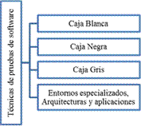

Objetivo general
Dar a conocer todos los documentos y técnicas de prueba de software para garantizar que el software funciona de forma correcta.
Objetivos específicos
Mostrar los elementos a probar en un software para su correcto funcionamiento. cuáles son las técnicas de pruebas funcionales, no funcionales, estructurales, regresión y re-pruebas. Aplicar las técnicas y exactamente asegurar la calidad de un buen software con todos los requisitos que el cliente solicita.
OVI 1: calidad en el desarrollo del software 2.1 Objetivo
Garantizar un buen software con calidad garantizando reducir costos y tiempo en la organización, implementando las herramientas adecuaddo integrar la misión, visión y su plan estratégico y obtener exlentes resultados.
2.2 Recursos de consulta que usara en la sección
(coloque el nombre del material que usara para crear los contenidos de la sección y el enlace de descarga de los mismos sean estos Texto, Imágenes, Audios o Vídeos)
La calidad del software se convierte en un objetivo fundamental para las empresas junto a los dos parámetros clásicos de su gestión: dinero y tiempo. Lo que premia es la adaptación a las necesidades del cliente y esto lleva a investigar primero cuales son las necesidades del (investigación de mercados) para luego definirlas en forma de requisitos que se han de cumplir (especificaciones).
OVI 2: pruebas para calidad el software
evaluar el software en cada proceso de construcción y durante el ciclo de vida y cumpliendo con los estándares internacionales ISO.
2.2 Recursos de consulta que usara en la sección
(coloque el nombre del material que usara para crear los contenidos de la sección y el enlace de descarga de los mismos sean estos Texto, Imágenes, Audios o Vídeos)

2.3 Redacte un borrador del contenido de lectura en formato de texto que tendrá la sección:
(Sea este la presentación de la sección, el contenido o ambos; redacte un borrador del texto que publicara como contenido en la sección coloque
un subtítulo para identificar si corresponde a la presentación de la sección o el contenido de lectura de la sección)
En este espacio se encuentra el proceso de pruebas que se deben de realizar por medio de la verificación de los requisitos que la empresa solicita si cumple con los objetivos planteados, importante dejar los soportes de las respectivas pruebas que se le realizan al software por escrito para facilitar detectar cuantas veces se presenta el error. las técnicas de prueba de software se implementan en todo el proceso de construcción del software evitando perdidas económicas, perdidas de información a futuro. Implementar la norma IEEE829 se encarga de la documentación de evaluación de software comprende los 10 documentos básicos que se deben de cumplir al realizar una prueba de software y comprobar la efectividad del software.